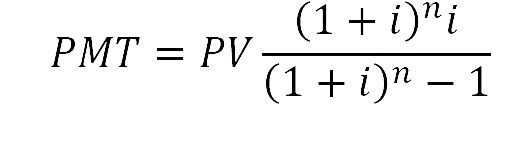
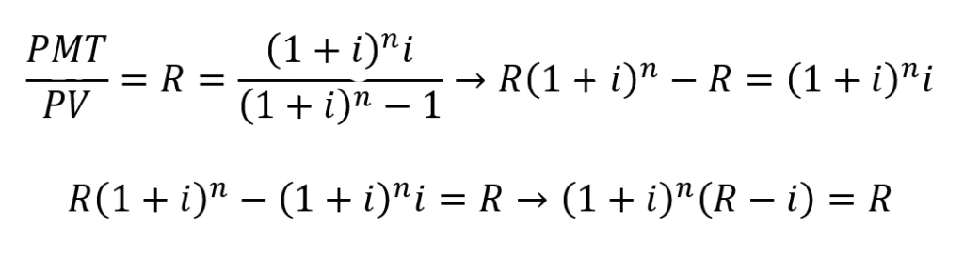
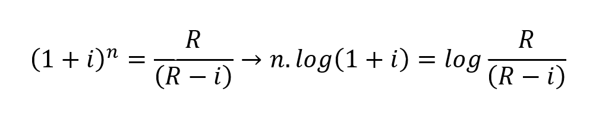

| Parcela | Prestação | Juros | Amortização | Saldo Devedor |
|---|
SOBRE TABELA PRICE
História
A Tabela Price é uma metodologia de amortização amplamente utilizada para calcular parcelas fixas em financiamentos e empréstimos. Seu nome vem do matemático e atuário escocês Richard Price, que desenvolveu essa fórmula no século XVIII para simplificar os cálculos de pagamentos em séries financeiras. Richard Price não criou a tabela com o intuito de aplicá-la em financiamentos, mas sim para resolver problemas de aposentadoria e apólices de seguros. Com o tempo, a fórmula de Price passou a ser aplicada também em financiamentos de bens duráveis e imóveis, ganhando destaque no mercado financeiro.
No começo do contrato, a maior parte da parcela corresponde aos juros, enquanto a parte da amortização é menor. À medida que o tempo passa, a proporção dos juros diminui, e a amortização aumenta, até que o saldo devedor seja totalmente quitado. Atualmente, a Tabela Price é amplamente usada em financiamentos de veículos, imóveis e outros bens de consumo, especialmente onde o valor das prestações fixas oferece um atrativo de previsibilidade aos clientes. O impacto dessa metodologia na economia é significativo, pois ela ajuda tanto consumidores quanto instituições financeiras a projetarem custos e rendimentos de forma previsível, incentivando o consumo e a movimentação do crédito na economia.

Como Funciona
Você já pensou em reduzir o prazo de seu financiamento pela Tabela Price? Vamos supor que tenha um financiamento em andamento e queira fazer uma amortização extra para fins de redução do prazo. Como vimos no artigo anterior, a fórmula para o cálculo do pagamento mensal (PMT) pela Tabela Price é:

Como o financiamento está vigente, você já sabe o valor do PMT, da taxa de juros (i) e o saldo devedor que passa a ser o valor presente PV. Assim, o objetivo é determinar o valor do tempo (n) para o saldo devedor (após amortização extra) em algum momento dentro do prazo de financiamento. Esse valor pode ser obtido, conforme segue:

Onde R é a razão entre PMT e PV.
Isolando o termo que contém n e aplicando o logaritmo, tem-se:

Portanto, o tempo de financiamento para o saldo devedor atual fica:
Exemplo
Para ilustrar uma aplicação, sejam os mesmos dados usados no artigo anterior:
- i = 0,0056541
- PMT = 1380,04
- Amortização extra = R$ 20.000,00
O valor presente é o saldo devedor no 5º mês (consulte o artigo anterior) menos a amortização extra:
Sabendo o valor presente, pode-se determinar a razão R:
Assim, o tempo equivalente para um novo valor de PV fica:
Como se trata de um número inteiro, arredonda-se o valor obtido para o inteiro mais próximo, ou seja, n=90. Portanto, a redução de prazo é equivalente a 25 meses, pois após o pagamento da 5ª parcela, faltavam 115 prestações que subtraídas de 90 resulta em 25. Além disso, deve-se atualizar o PMT, pois a amortização não foi feita com um número exato de prestações. Assim, deve-se calcular o novo PMT com base nas seguintes variáveis:
- i = 0,0056541
- PV = 96452,40
- n = 90
Vantagens da Tabela Price
Apesar de algumas desvantagens, a Tabela Price apresenta diversas vantagens que a tornam uma opção atraente em várias situações de crédito. A principal vantagem é a previsibilidade das parcelas fixas ao longo de todo o contrato. Isso significa que o cliente sabe exatamente quanto vai pagar a cada mês, o que facilita o planejamento financeiro. Essa previsibilidade é especialmente útil para consumidores que precisam organizar suas finanças com antecedência e não querem lidar com variações nas parcelas.
Além disso, a Tabela Price é um sistema simples e amplamente conhecido no mercado financeiro, o que facilita o entendimento tanto para consumidores quanto para instituições financeiras. A estabilidade das prestações é atraente para aqueles que desejam uma abordagem mais segura e organizada em seu planejamento financeiro, sem surpresas ao longo do período de pagamento.
Desvantagens da Tabela Price
A Tabela Price possui algumas desvantagens que podem tornar essa modalidade de amortização menos atrativa em determinados tipos de financiamento, especialmente em prazos mais longos. Uma das principais desvantagens é o custo total elevado com juros. No início do financiamento, grande parte da parcela é destinada ao pagamento dos juros, enquanto a amortização do principal (a parte que reduz efetivamente o saldo devedor) é pequena. Isso significa que, durante boa parte do contrato, o saldo devedor diminui de forma lenta, o que acaba gerando um custo maior ao longo do tempo em comparação a outros sistemas de amortização, como o SAC (Sistema de Amortização Constante).